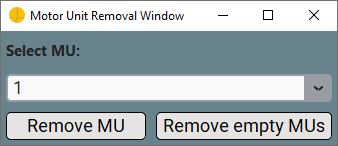
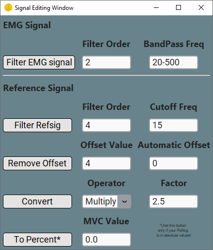
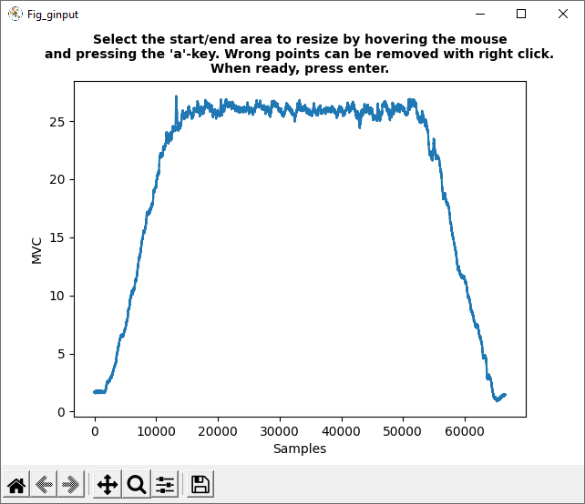
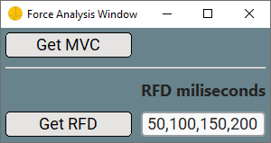
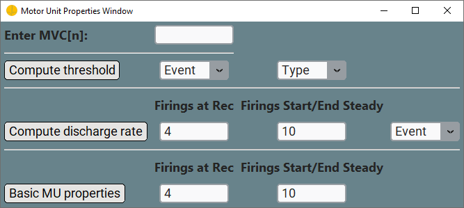
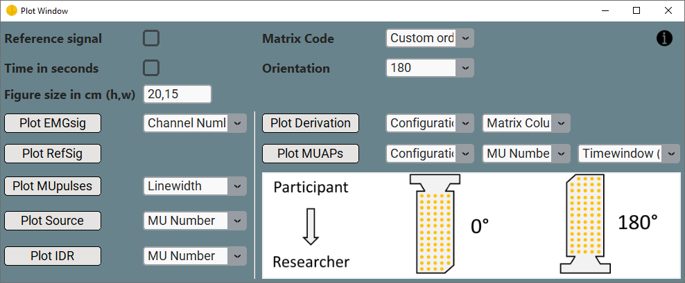

Graphical Interface¶
This is the basic introduction to the openhdemg GUI. In the next few sections, we will go through the basic analysis functions embedded in the GUI. For the advanced stuff, take a look at the advanced chapter. We will start with how to sort the motor units (MUs) included in your analysis file, go over force and MU property analysis, take a detour on plotting, and take a look at how to save and reset your analysis. Have fun!
Motor Unit Sorting¶
To sort the MUs included in your analysis file in order of their recruitement, we implemented a sorting algorithm. The MUs are sorted based on their recruitement order in an ascending manner.
-
Load a file. Take a look at the intro section on how to do so.
-
On the left hand side in the main window of the GUI, you can find the
Sort MUsbutton. It is located in row three, column two. Once you press the button, the MUs will be sorted based on recruitment order.
Remove Motor Units¶
To remove MUs included in your analysis file, you can click the Remove MUs button. The button is located on the left hand side in the main window of the GUI in column one of row four.

-
Click the
Remove MUsbutton, and a file is loaded, a pop-up window will open. -
Select the MU you want to delete from the analysis file from the
will result in the second MU to be deleted (Python is base 0).Select MU:dropdown. -
Click the
Remove MUbutton to remove the MU.
Alternatively, you can click the Remove empty MUs button to delete all the MUs without discharge times. These can be present in the emgfile as the result of decomposed duplicates that have not been fully removed.
Signal Editing¶
It is often necessary to edit (e.g., filter or convert) the signals. In the openhdemg GUI this can be done from the Signal Editing Window. In order to open this window, click the Signal Editing button.

EMG Signal Filtering¶
It is common practice to filter the EMG signal before decomposition. However, if your emgfile contains the raw (unfiltered) signal, this can be easily filtered from the Signal Editing Window.
-
Click the
Signal Editingbutton located in row five and column one, a new pop-up window opens. In theSignal Editing Window, you can band-pass filter the EMG signal and process the reference signal (see next paragraph). -
When you click the
will allow only frequencies between 20 and 500 Hz to pass trough.Filter EMG signalbutton, the EMG signal is band-pass filtered (Zero-lag, Butterworth) according to values specified in theFilter OrderandBandPass Freqtextboxes. In example, specifiying
Reference Signal Editing¶
The openhdemg GUI also allows you to edit and filter reference signals contained in your analysis file (this can be either a file containing both the MUs and the reference signal or a file containing only the reference signal).
-
Click the
Signal Editingbutton located in row five and column one, a new pop-up window opens. In theSignal Editing Window, you can low-pass filter the reference signal as well as remove any signal offset. Additionally, you can also convert your reference signal by a specific factor (amplification factor) or convert it from absolute to percentage (relative or normalised) values. -
When you click the
will allow only frequencies below 15 Hz to pass trough.Filter RefSigbutton, the reference signal is low-pass filtered (Zero-lag, Butterworth) according to values specified in theFilter OrderandCutoff Freqtextboxes. In example, specifiying -
When you click the
will result in an offset correction by -4 in y-axis direction. Furthermore, specifying will result in automatic offset removal. In this case, the offset value is determined as the mean value of n samples at the beginning of the contraction (where n is equal to the value passed to Automatic). Moreover, specifying will allow you to manually correct the offset in a new pop-up plot. You just need to follow the instructions on the plot.Remove Offsetbutton, the reference signal's offset will be removed according to the values specified in theOffset ValueandAutomatic Offsettextboxes. In example, specifying -
When you click the
will amplify the reference signal 2.5 times.Convertbutton, the reference signal will be multiplied or divided (depending onOperator) by theFactor. In example, specifyingWhile:
will make your negative reference signal become positive. -
When you click the
To Percentbutton, the reference signal in absolute values is converted to percentage (relative or normalised) values based on the providedMVC Value. This step should be performed before any analysis, because openhdemg is designed to work with a normalised reference signal. In example, a file with a reference signal in absolute values ranging from 0 to 100 will be normalised from 0 to 20 if
Resize EMG File¶
Sometimes, resizing of your analysis file is unevitable. Luckily, openhdemg provides an easy solution. In row five and column two in the left side of the GUI, you can find the Resize File button.

-
View the MUs using the
View MUsbutton prior to file resizing, you can directly see what is happening. -
Clicking the
Resize Filebutton will open a new pop-up plot of your analysis file. -
Follow the instructions in the plot to resize the file. Simply click in the signal twice (once for start-point, once for end-point) to specify the resizing region and press enter to confirm your choice.
Analyse Force Signal¶
In order to analyse the force signal in your analysis file, you can press the Analyse Force button located in row six and column one in the left side of the GUI. A new pop-up window will open where you can analyse the maximum voluntary contraction (MVC) value as well as the rate of force development (RFD).

Maximum voluntary contraction¶
- In order to get the MVC value, simply press the
Get MVCbutton. A pop-up plot opens and you can select the area where you suspect the MVC to be. - Click once to specify the start-point and once to specify the end-point.
- Press enter to confirm you choice. You will then see a
Result Outputappearing at the bottom of the main window of the GUI. There you can find the actual result of your MVC analysis. - You can edit or copy any value in the
Result Output, however, you need to close the top-levelForce Analysis Windowfirst.
Rate Of Force Development¶
- To calculate the RFD values you can press the
Get RFDbutton. - A pop-up plot appears and you need to specify the starting point of the rise in the force signal by clicking and subsequenlty pressing enter.
-
The respective RFD values between the stated timepoint ranges (ms) in the
will result in RFD value calculation between the intervals 0-50ms, 0-100ms, 0-150ms and 0-200ms. You can also specify less or more values in theRFD milisecondstextinput are displayed in theResult Output. In example, specifyingRFD milisecondstextbox. -
You can edit or copy any value in the
Result Output, however, you need to close the top-levelForce Analysis Windowfirst.
Motor Unit Properties¶
When you press the MU Properties button in row six and column two, the Motor Unit Properties Window will pop up. In this window, you have the option to analyse several MUs propierties such as the MUs recruitement threshold or the MUs discharge rate.

-
Specify your priorly calculated MVC in the
Enter MVC [N]:textbox, like
Compute Motor Unit Threshold¶
Subsequently to specifying the MVC, you can compute the MUs recruitement threshold by specifying the respective event and type in the Event and Type dropdown list.
-
Specify the
Eventdropdown and choose: -
Specify the
Typedropdown and choose: -
Once you click the
Compute thresholdbutton, the recruitement threshold will be computed. - The recruitement threshold for each inluded MU in the analysis file will be displayed in the
Result Outputof the GUI. - You can edit or copy any value in the
Result Output, however, you need to close the top-levelMotor Unit Properties Windowfirst.
Compute Motor Unit Discharge Rate¶
Subsequently to specifying the MVC, you can compute the MUs discharge rate by entering the respective firing rates and event.
- Specify the number of firings at recruitment and derecruitment to consider for the calculation in the
Firings at Rectextbox. -
Enter the number of firings over which to calculate the discharge rate at the start and end of the steady-state phase in the
Firings Start/End Steadytextbox.For example:
-
Lastly you need to specify the computation
Event. From theEventdropdown list, you can choose:"rec_derec_steady" : Discharge rate is calculated at recruitment, derecruitment and during the steady-state phase. "rec" : Discharge rate is calculated at recruitment. "derec" : Discharge rate is calculated at derecruitment. "rec_derec" : Discharge rate is calculated at recruitment and derecruitment. "steady" : Discharge rate is calculated during the steady-state phase. -
Once you press the
Compute discharge ratebutton, the discharge rate will be calculated. - The discharge rate for each inluded MU in the analysis file at the stated event as well a for all the contraction will be displayed in the
Result Outputof the GUI. - You can edit or copy any value in the
Result Output, however, you need to close the top-levelMotor Unit Properties Windowfirst.
Basic Motor Unit Properties¶
Subsequently to specifying the MVC, you can calculate a number of basic MUs properties with one click. These include
- The absolute/relative recruitment/derecruitment thresholds
- The discharge rate at recruitment, derecruitment, during the steady-state phase and during the entire contraction
- The individual and average accuracy
- The coefficient of variation of interspike interval
- The coefficient of variation of force signal
and are all displayed in the Result Output once the analysis in completed.
- Specify the number of firings at recruitment and derecruitment to consider for the calculation of discharge rate in the
Firings at Rectextbox. -
Enter the number of firings over which to calculate the discharge rate at the start and end of the steady-state phase in the
Firings Start/End Steadytextbox. For example, -
The basic MUs properties will be displayed in the
Result Outputof the GUI. - You can edit or copy any value in the
Result Output, however, you need to close the top-levelMotor Unit Properties Windowfirst.
Plot Motor Units¶
In openhdemg we have implemented options to plot your analysis file ... a lot of options!
Upon clicking the Plot MUs button, the Plot Window will pop up. In the top right corner of the window, you can find an information button forwarding you directly to this tutorial.

You can choose between the follwing plotting options:
- Plot the raw emg signal. Single or multiple channels. (Plot EMGSig)
- Plot the reference signal. (Plot RefSig)
- Plot all the MUs pulses (binary representation of the firings time). (Plot MUPulses)
- Plot the decomposed source. (Plot Source)
- Plot the instantaneous discharge rate (IDR). (Plot IDR)
- Plot the differential derivation of the raw emg signal by matrix column. (Plot Derivation)
- Plot motor unit action potentials (MUAPs) obtained from spike-triggered average (STA) from one or multiple MUs. Please note that for Delsys files, the displayed MUAPs are those computed in the Delsys software and not those obtained via STA. (Plot MUAPs)
Prior to plotting you can optionally select a few options on the left side of the Plot Window.
- When you want the reference signal to be displayed in the plots you can select the
Reference Signalcheckbox in row one and column two in the left side of thePlot Window. - You can specify wheter you want the x-axis of the plots to be scaled in seconds by selecting the
Time in secondscheckbox in row two and column two in the left side of thePlot Window. -
You can change the size of the plot as well, by inputting your prefered height and width in the
Figure in size in cm (h,w)textbox in row three and column two in the left side of thePlot Window. For example, if you want your plot to have a height of 6 and a width of 8, your input should look like this
These three setting options are universally used in all plots. There are two more specification options on the right side of the Plot Window only relevant when using the Plot Derivation or Plot MUAP buttons.
-
The
Matrix Codemust be specified in row one and column four in the right side of thePlot Windowaccording to the one you used during acquisition. So far, implemented codes are:Custom orderNoneGR08MM1305GR04MM1305GR10MM0808Trigno Galileo Sensor
In case you selected
Custom order, you must also specify the custom order in the GUI settings. Please refer to this tutorial for further instructions on how to do so.In case you selected
means that your File has 65 channels organised over 13 rows and 5 columns.None, the entryboxRows, Columnswill appear. Please specify the number of rows and columns of your used matrix since you now bypass included matrix codes. In example, specifying -
If you selected one of the built-in sorting orders (e.g.,
GR08MM1305,GR04MM1305,GR10MM0808), you need to specify also theOrientationin row two and column four in the left side of thePlot Window. TheOrientaionmust match the one of your matrix during acquisition. You can find a reference image for theOrientationat the bottom in the right side of thePlot Window.Orientationis ignored whenMatrix CodeisNone,Custom orderorTrigno Galileo Sensor.
Plot Raw EMG Signal¶
- Click the
Plot EMGsigbutton in row four and column one in the left side of thePlot Window, to plot the raw emg signal of your analysis file. - Enter or select a
Channel Numberin / from the dropdown list. For example, if you want to plotChannel Numberone enter 0 in the dropdown. If you want to plotChannel Numbersone, two and three enter 0,1,2 in the dropdown. - Once you have clicked the
Plot EMGsigbutton, a pop-up plot will appear.
Plot Reference Signal¶
- Click the
Plot RefSigbutton in row five and column one in the left side of thePlot Window, to plot the reference signal. - Once you have clicked the
Plot RefSigbutton, a pop-up plot will appear.
Plot Motor Unit Pulses¶
- Click the
Plot MUpulsesbutton in row six and column one in the left side of thePlot Window, to plot the single pulses of the MUs in your analysis file. - Enter/select a pulse
Linewidthin/from the dropdown list. For example, if you want to use aLinewidthof one, enter 1 in the dropdown. - Once you have clicked the
Plot MUpulsesbutton, a pop-up plot will appear.
Plot the Decomposed Source¶
- Click the
Plot Sourcebutton in row seven and column one in the left side of thePlot Window, to plot the Source of the decomposed MUs in your analysis file. - Enter/select a
MU Numberin/from the dropdown list. For example, if you want to plot the source forMU Numberone enter 0 in the dropdown. If you want to plot the sources forMU Numberone, two and three enter 0,1,2, in the dropdown. You can also setMU Numberto "all" to plot the sources for all included MUs in the analysis file. - Once you have clicked the
Plot Sourcebutton, a pop-up plot will appear.
Plot Instanteous Discharge rate¶
- Click the
Plot IDRbutton in row eight and column one in the left side of thePlot Window, to plot the IDR of the MUs in your analysis file. - Enter/select a
MU Numberin/from the dropdown list. For example, if you want to plot the IDR ofMU Numberone enter 0 in the dropdown. If you want to plot the IDR ofMU Numberone, two and three enter 0,1,2 in the dropdown. You can also setMU Numberto "all" to plot the IDR of all included MUs in the analysis file. - Once you have clicked the
Plot IDRbutton, a pop-up plot will appear.
Plot Differential Derivation¶
- Click the
Plot Derivationbutton in row four and column three in the right side of thePlot Window, to plot the differential derivation of the MUs in your analysis file. - Specify the
Configurationfor the calculation first. You can choose from:Single differential(Calculate single differential of raw signal on matrix rows)Double differential(Calculate double differential of raw signal on matrix rows)
- Specify the respective
Matrix Columnyou want to plot. You can choose one from theMatrix Columndropdown list. - Once you have clicked the
Plot Derivationbutton, a new pop-up plot appears.
Plot Motor Unit Action Potentials¶
- Click the
Plot MUAPsbutton in row five and column three in the right side of thePlot Window, you can plot the action potential of the MUs in your analysis file. - Specify the
Configurationfor calculation first. You can choose from:MonopolarSingle differential(Calculate single differential of raw signal on matrix rows)Double differential(Calculate double differential of raw signal on matrix rows)
- Specify the respective
MU Numberyou want to plot. You can choose one from theMU Numberdropdown list. - Specify the
Timewindowof the plots. You can choose from theTimewindowdropdown list or enter any integer. - Once you have clicked the
Plot MUAPsbutton, a new pop-up plot appears.
Please note, if you are using the Delsys decomposition outcome, the plotted MUAPs will be those calculated bu the Delsys software.
Saving Your Analysis File¶
Subsequently to analysing your emg-file in the openhdemg GUI, it is beneficial to save it. Otherwise, all changes will be lost when the GUI is closed.
- Click the
Save Filebutton in row two and column two in the left side of the main window. - Specify a filename and a location and confirm! That's it!
Saving Your Analysis Results¶
Some analyses included in the openhdemg GUI return values that are displayed in the Result Output of the GUI. Of course, you can simply copy-paste them, but it might be more convenient to directly save your analysis results. Additionally, all the values in the Results Output will be overwritten by new analyses or deleted in case of closing the GUI.
- click the
Save Resultsbutton in row two and column two in the left side of the main window. - Specify a location where to save the file and confirm. You can find the file there with the name of your analysis file.
Resetting Your Analysis¶
We all make mistakes! But, most likely, we are also able to correct them. In case you have made a mistake in the analysis of your emgfile in the openhdemg GUI, we have implemented a reset button for you. Click the Reset Analysis button in row eight and column two in the lef side of the main window to reset any analysis you previously performed since opening the GUI and inputting an analysis file. Your analysis file is reset to the original file and all the changes are discarded. So, no need to be perfect!
If you want to proceed to the advanced stuff now, take a look at the advanced tab on the left side of the webpage.
More questions?¶
We hope that this tutorial was useful. If you need any additional information, do not hesitate to read the answers or ask a question in the openhdemg discussion section. If you are not familiar with GitHub discussions, please read this post. This will allow the openhdemg community to answer your questions.
Moreover, if you noticed an error that was not properly catched by the GUI, please report the issue.